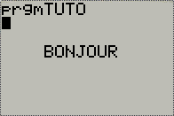

Lors du passage du collège au lycée, vous devez généralement vous équiper d'une calculatrice plus puissante (chez TI, on parle de calculatrices graphiques). Elle gère généralement les graphiques, permet la création de programmes, etc. Bref, c'est un gros changement, et au début, on s'y perd un peu. :euh:
Nous allons donc essayer de faire en sorte que vous puissiez utiliser tout le potentiel de programmation du TI-BASIC !
Parler de "l'univers Texas Instruments" est peut-être un peu fort, il s'agit pourtant d'une marque très connue et importante de calculatrices ! Si vous êtes au lycée, vous avez peut-être remarqué qu'une autre marque est en vogue : Casio. Il y a quelques années, les Hewlett Packard était aussi recommandées dans les lycées, mais maintenant on n'en entend presque plus parler. :euh:
Ok, mais moi c'est Texas Instruments qui m'intéresse : ça se passe comment chez eux, alors ?
Comme vous avez pu le lire précédemment, vous êtes ici pour apprendre le TI-Basic !
Et... c'est quoi, le TI-Basic ?
Il s'agit du langage de programmation des calculatrices graphiques de chez TI. On peut décomposer le nom en deux parties : TI, comme le nom du constructeur (quelle originalité :p ), et Basic, qui indique qu'il appartient à la famille des langages BASIC. Autrement dit, c'est un langage qui n'est pas très compliqué à comprendre et à utiliser ; en revanche, il ne sera pas très puissant ! Heureusement, les calculatrices ne sont pas très puissantes ; ce n'est donc pas bien grave.
Le TI-Basic dispose d'un avantage énorme : il est directement programmable sur votre calculatrice. Cela signifie que vous pourrez même programmer en cours. :-°
De quoi est-il capable ?
Bien qu'il soit assez limité (eh oui, hors de question de faire des jeux en 3D), il reste très pratique et fonctionnel. Il vous permettra ainsi de faire :
des jeux (en utilisant le mode Graphique, il est possible de faire de la 2D assez poussée) ;
des programmes de maths, de physique ;
...
Comme vous pouvez le constater, vous pourrez faire quelques trucs pouvant être assez sympas. Et croyez-moi, c'est très agréable quand on veut résoudre une équation du second degré sans se casser la tête, et qu'un joli programme vous donne la réponse toute prête !
Et ça marche comment ?
En fait, c'est assez simple : il suffira d'écrire des instructions les unes à la suite des autres et la calculatrice va bêtement faire ce qu'on lui demande. Bien sûr, ces instructions doivent avoir un sens, il ne suffit pas d'écrire ce qu'on veut en français pour que ça marche. Ce sont ces instructions que VOUS allez apprendre !
Bon : allez, comme un exemple vaut mieux qu'un long discours :
:Prompt A
:Disp A
Notez que le code est notifié comme étant du Pascal. Ce n'est pas du tout le cas, mais comme il n'existe pas de coloration syntaxique disponible pour le TI-basic, on utilise celle du langage Pascal pour quand même avoir un peu de couleur. :D
Pour le moment, ne nous intéressons pas au code, mais plutôt à la manière dont il est écrit : votre calculatrice va lire la première ligne et l'interpréter (Prompt A ) puis, quand elle aura fini, elle passera à la seconde ligne (Disp A ) et ainsi de suite (sauf qu'ici, il n'y a que deux lignes, il ne faudrait pas trop vous embrouiller dès le début ;) ). Pour votre curiosité, ce tout petit programme va vous demander d'entrer un chiffre et vous l'affichera (même si cela ne sert pas à grand-chose :p ), mais vous comprendrez cela plus tard.
Plusieurs types de TI-basic
Eh oui, il existe plusieurs types de TI-basic. En effet, le TI-basic est différent pour chaque génération de calculatrice. Nous étudions ici le TI-basic des calculatrice graphiques 84 et inférieures.
Nous allons dans ce tutoriel prendre comme calculatrice une TI-83 Plus, puisqu'il semble que cela soit le modèle le plus répandu. Si vous avez un autre modèle vous verrez qu'il n'y a pratiquement pas de différences. Sauf pour la TI-82 Stats.fr, dont quasiment tout est traduit en français. Reportez-vous à l'annexe citée ci-dessus pour pouvoir suivre ce tuto. ;)
Les touches graphiques
Elles permettent d'accéder à des menus du mode graphique. On les verra en détail bien plus tard, car le mode graphique est compliqué à assimiler.
Les touches d'édition
Elles permettent d'effectuer toutes sortes d'opérations sur le fonctionnement général de la calculatrice.
Les touches seconde () et alpha ()
Ces touches ne font rien en elles-mêmes, à part changer la forme du curseur :
pour la touche
et
pour la touche
. Mais lorsque que le curseur a une de ces formes, la prochaine touche que vous presserez aura un autre effet que celui produit habituellement : vous activerez ce qui est écrit en haut de la touche pressée : en jaune pour
(on les appelle opérations auxiliaires), et en bleu turquoise pour
.
Les flèches
Les touches
,
,
"/>
et
permettent respectivement de déplacer le curseur à gauche, sur la ligne du dessus, à droite et sur la ligne du dessous. Presser
alors que l'on est tout en haut de l'écran ramène le curseur au début de l'expression. Presser
alors que l'on est tout en bas de l'écran ramène le curseur à la fin de l'expression.
La touche supprimer ()
Cette touche est l'abréviation de DELETE, qui veut dire supprimer en anglais. Cette touche a donc pour effet de supprimer le caractère sur lequel se trouve le curseur.
, tout comme les flèches, est une touche répétitive.
Le touche effacer ()
Étrangement, cette touche se nomme "annuler" sur la TI-82 Stats.fr ; pourtant, ne vous y trompez pas, cette touche est une touche de suppression massive :pirate: :
si vous êtes en train d'écrire une expression, où que ce soit, elle effacera toute votre expression ;
si vous êtes sur une ligne vide de l'écran principal, elle effacera l'intégralité de cet écran.
Mais aussi, et c'est ce qui peut justifier pourquoi elle est traduite en "annuler", la touche permet de quitter un menu de fonction avancée (que l'on va voir dans un instant).
L'opération auxiliaire insérer ()
Cette combinaison de touche se nomme INS (pour INSERT, insérer en français) et s'obtient en faisant
. Elle transforme le curseur en
et permet d'écrire de nouveaux caractères en repoussant les autres (c'est-à-dire sans réécrire par-dessus).
La touche d'inconnue ()
Cette touche permet d'entrer directement l'inconnue du mode dans lequel vous êtes. Généralement, on est en mode fonction : "Y=f(X)", l'inconnue est alors X, et la touche
affichera donc un X. En paramétrique, l'inconnue est T, en polaire heta, et pour les suites n.
La touche de validation ()
Cette touche permet de valider une expression entrée, ou un choix dans un menu. Elle permet aussi de passer à la ligne lorsque l'on édite un programme.
Les touches de fonctions avancées
Ces touches permettent d'accéder à des menus qui vous présenteront des fonctions bien pratiques.
Le menu mode ()
Ce menu permet de gérer les caractéristiques globales de la calculatrice (degrés / radians, écriture normale / scientifique ...). Il est expliqué en détail plus bas dans la page.
Le menu statistique ()
Comme son nom l'indique, il permet la gestion d'outils de statistiques (la moyenne...).
Le menu mathématique ()
Il contient plein de fonctions très pratiques pour faire des maths (valeur absolue, PGCD...).
Le menu des applications ()
Ce menu permet de lancer vos applications téléchargées ; la plus connue étant le tableau périodique des éléments.
Le menu programme ()
Ce menu sert à gérer les programmes, ainsi qu'à la programmation.
Le menu variables ()
Ce menu permet d'accéder à toutes sortes de variables.
Les touches de calcul scientifique
Ces touches vous permettent simplement de faire des calculs, ce sont les mêmes qui apparaissent sur vos calculatrices de collège.
Rapidement :
Touche
Fonction
Opération auxiliaire
Fonction
Inverse
MATRX
Le menu matrice
Trigonométrie : sinus
SIN-1
Trigonométrie : arcsinus
Trigonométrie : cosinus
COS-1
Trigonométrie : arccosinus
Trigonométrie : tangente
TAN-1
Trigonométrie : arctangente
Puissance
\pi
Le nombre \pi
Carré
?
Racine carrée
Ne pas confondre avec la virgule des décimales. Sert à séparer des arguments dans une fonction
Vous tombez dessus par défaut lorsque vous allumez votre calculatrice.
C'est l'écran dans lequel vous rentrez vos calculs. La seule différence par rapport à une calculatrice de collège, c'est qu'il contient plusieurs lignes.
Pour accéder à l'écran principal depuis tout autre menu, faites
(QUIT).
Le graphique
Cet écran est la grande nouveauté de la calculatrice graphique : vous pouvez afficher des fonctions sur votre écran. Ce type d'écran peut s'obtenir :
avec
: vous avez les courbes qui s'affichent et vous pouvez déplacer votre curseur qui vous donne les coordonnées du point où le curseur est placé ;
avec
: votre curseur se déplace sur les points que dessine la courbe. Vous avez donc les coordonnées exactes de ces points.
Vous pouvez écrire vos fonctions dans la boîte de dialogue que vous obtenez en faisant
.
La table
C'est un écran qui s'obtient en faisant
. Il vous donne toutes les valeurs de f(x) pour un x donné. Vous pouvez modifier les paramètres de la table (le pas et la valeur initiale) en faisant
.
Les écrans d'options
Ce sont les écrans que vous obtenez lorsque vous allez dans un menu (comme "math", par exemple). Ce type d'écran vous propose un choix que vous devez aller chercher avec les flèches et en validant avec
. Vous pouvez aussi, lorsque c'est possible, appuyer sur la touche écrit à gauche de la fonction. Par exemple, sur le screen du menu math ci-contre, si vous voulez obtenir le 3 (la fonction cube), vous pouvez faire
ou tout simplement
.
Pour quitter un menu, faites
ou lancez un nouveau menu.
Les modes de la calculatrice
Votre calculatrice réagira différemment selon les paramètres que vous aurez mis dans le menu mode (
). Ce menu d'options est un peu spécial : chaque ligne représente un paramètre. Pour vous déplacer, utilisez les flèches, puis validez par
. Voici tous ces paramètres.
Notation numérique
Comme vous le savez sûrement (sinon renseignez-vous ça peut toujours être utile ^^ ), on peut écrire un nombre de 3 façons :
comme vous le faites tout les jours, exemple : 56360 ;
en écriture scientifique, avec le même exemple : 5.636*104 ;
en écriture ingénieur, avec le même exemple : 56.36*103.
Ça tombe bien, la calculette a justement ce qu'il nous faut :zorro: : elle dispose de 3 modes pour ces trois écritures :
Normal, pour l'écriture normale ;
Sci pour l'écriture scientifique ;
Eng pour l'écriture ingénieur.
Nombre de décimales
Float signifie virgule flottante : cela signifie que la calculatrice affichera le nombre maximum de chiffres sur l'écran (dans le cas d'un nombre comme 1/3), c'est-à-dire un maximum de 10 chiffres plus le signe et le point décimal.
Les chiffres que vous voyez à droite sur l'écran représentent une virgule fixe, c'est-à-dire qu'après la virgule, il y aura autant de chiffres que le nombre sélectionné dans le menu mode.
Unité de mesure angulaire
C'est tout simplement pour choisir entre des calculs en radians ou en degrés. C'est utile pour la trigonométrie.
Type de représentation graphique
Paramètre vous permettant de choisir le mode de représentation graphique :
Func permet de faire des fonctions de type Y=f(X) ;
Par permet de faire des fonctions paramétriques, avec X et Y en fonction de T ;
Pol permet de faire des fonctions polaires, où r est en fonction de heta ;
Seq permet de faire des suites numériques.
Relier éventuellement les points d'un graphe
Connected relie tous les points du graphique tandis que Dot les laisse séparés s'ils sont trop éloignés.
Tracé simultané éventuel
En mode Sequential, la calculatrice va d'abord tracer la première courbe, puis la suivante, et ainsi de suite. En Simul, la calculatrice va tracer tous les points de même abscisse de toutes les courbes, avant de passer au point d'abscisse suivant.
Réel, forme algébrique, forme exponentielle
Le mode réel ne permet pas d'afficher des nombres complexes, comme les racines carrées de nombres négatifs, mais il affichera un résultat si l'on met un nombre complexe (comme \iota en entrée). Le mode complexe algébrique (a+b\iota) affichera les nombres complexes sous la forme a + b imes\iota. Le mode complexe exponentiel (re^ heta\iota) affichera les nombres complexes sous la forme r imes e^{ heta imes\iota}.
Écran entier, deux modes d'écrans partagés
En mode Full, l'écran est normal : il n'est jamais coupé. Le mode horizontal (Horiz) affiche le graphique dans la partie supérieure de l'écran et l'écran principal ou un éditeur dans la partie inférieure. Le mode table graphique (G-T) affiche le graphique dans la moitié gauche de l'écran, et l'écran table dans la moitié droite.
Maintenant que vous savez bien à quoi ressemble votre calculatrice de l'extérieur, on va s'intéresser un peu plus à l'intérieur. :ninja:
Bon c'est bien joli tout ça, mais si je veux programmer, je le mets où mon code ?
On a vu que votre calculatrice avait 4 façons de gérer votre écran : l'écran principal, l'écran du graphique, l'écran du tableau de valeurs et les menus d'options.
Mais en fait on vous a menti :-° , il existe un autre type d'écran, l'écran de code. Mais il est un peu caché puisqu'il renferme le code des programmes : ce n'est pas très intéressant de le lire pour l'utilisateur et il ne faut pas effacer accidentellement une ligne. ;)
Nous allons donc voir comment accéder à cet écran de programme. Mais avant, pour écrire le code d'un programme, il nous faut... un programme ! ^^
Voici donc comment créer un programme : Depuis l'écran principal, faites
.
La calculatrice vous demande maintenant d'entrer le nom du programme. Il peut contenir de 1 à 8 caractères, des lettres (plus heta) et des chiffres (sauf pour le premier caractère). Nous verrons en détails dans le chapitre suivant comment écrire sur la calculatrice. Pour l'instant, contentez-vous de taper sur les touches
,
,
puis
: le texte "TUTO" s'affiche à l'écran ; appuyez alors sur
pour continuer.
L'écran d'édition de programme
Vous devez alors obtenir ça sur l'écran :
La première ligne indique que l'on est sur l'écran-type d'édition de programme et nous rappelle le nom du programme que l'on édite. Les 7 lignes suivantes sont celles où vous pouvez entrer le code. Si vous sautez plein de lignes (en appuyant sur
de façon répétée), vous observerez que la première ligne reste fixe, tandis que les 7 autres peuvent défiler. On peut comparer ceci à une fenêtre sur votre ordinateur : le titre de la fenêtre (là où il y a les boutons agrandir, fermer...) reste fixe, mais vous pouvez faire défiler une page dans la fenêtre. ;)
Quitter l'écran d'édition de programme
Pour quitter, il vous suffit juste d'appuyer sur l'opération auxiliaire QUIT (quitter en français), qui se trouve sur le bouton
Maintenant que je suis sur le menu principal, comment faire pour retourner éditer mon programme ?
Le menu PRGM
Vous vous souvenez tout à l'heure, pour créer votre programme, vous avez rapidement fait
.
Revenons là-dessus : Tout d'abord, vous avez cliqué sur
, cela a donc ouvert le menu programme. Regardez la première ligne de l'écran, on distingue 3 onglets :
EXEC, pour lancer un programme déjà créé ;
EDIT, pour éditer un programme déjà créé ;
NEW, pour créer un nouveau programme.
Si vous avez bien tout suivi, vous devriez avoir compris que quand vous avez appuyé sur
, on est passé du premier onglet (EXEC) au dernier (NEW). Et quand vous avez appuyé sur
, vous avez sélectionné la première option de l'onglet NEW (en l'occurrence, il n'y a qu'une seule option et elle permet de créer un nouveau programme).
Si vous êtes perspicace, vous devriez avoir trouvé comment éditer le programme déjà créé.
Éditer un programme
Il suffit tout simplement de lancer le menu PRGM (
), puis de sélectionner l'onglet EDIT (
"/>
), de choisir votre programme dans la liste avec les flèches
et
(normalement vous n'avez de créé que le programme TUTO), puis de valider votre choix avec
.
Et vous revoilà devant l'écran d'édition de programme. :)
Pour lancer un programme, rendez-vous sur l'écran principal, puis faites
. La liste des programmes que vous possédez apparaît alors. Sélectionnez le vôtre avec
et
puis validez votre sélection avec
. Puis votre sélection apparaît sur le menu principal.
Vous obtenez donc "prgmPROGRAM" sur l'écran. Validez l'expression avec
.
Programme en exécution
On reconnaît que la calculatrice est en train d'exécuter un programme grâce à un petit sigle en haut à droite, comme ceci :
Arrêter un programme
Le mieux pour arrêter un programme, c'est d'attendre qu'il s'arrête tout seul. Mais si vous êtes pressé ou si votre programme ne s'arrête jamais, vous pouvez l'arrêter en appuyant sur
.
Il s'affichera alors ceci :
C'est un menu qui permet soit de revenir là où le programme vous avait laissé (sur l'écran principal, le graphique...), soit d'aller dans le code du programme.
Pour supprimer un programme de votre calculatrice, il va falloir se rendre dans le menu de gestion de mémoire. Pour y accéder depuis votre calculatrice, faites
.
Vous accédez au menu suivant :
Sélectionnez la deuxième option pour arriver à cet écran :
Sélectionnez ensuite la 7ème ligne : "7:Prgm...". Sélectionnez ensuite le programme à supprimer puis appuyez sur
pour le supprimer. On vous demandera alors confirmation.
L'archivage
Plutôt que de supprimer votre programme, vous pouvez l'archiver. Cela veut dire que vous le transférez vers un autre type de mémoire qui est beaucoup plus importante en taille. Vous ne pourrez donc plus utiliser votre programme jusqu'à ce que vous le désarchiviez (ce qui est très rapide je vous rassure ^^ ). Vous gagnez donc de la place sur votre mémoire vive.
Pour archiver un programme, suivez la même procédure que pour en supprimer un, sauf qu'il faut que vous appuyez sur
au lieu de
à la fin.
Si tout s'est bien passé, un * apparaît à gauche du nom du programme, vous indiquant qu'il est archivé.
Renommer un programme
Il n'existe pas de fonction toute faite pour renommer un programme, il va falloir utiliser une petite astuce.
Retournez dans le programme TUTO (recréez-le si vous l'avez supprimé) et remplissez une ligne avec quelques chiffres, par exemple tapotez "12304650" dans la première ligne.
Maintenant, si l'on veut que ce programme s'appelle autrement, on va créer un nouveau programme et lui donner ce nouveau nom. On va ensuite faire une sorte de copier/coller du programme que l'on veut renommer. Pour ce faire, utilisez depuis l'écran d'édition du nouveau programme la fonction RCL (rappel en français) qui s'obtient en faisant
. Ensuite, faites
, et sélectionnez le programme à renommer dans la liste. Une fois votre sélection validée, appuyez sur
pour valider le RCL.
Et là, sous vos yeux ébahis, le code de l'ancien programme (ici "12304650") se colle dans le nouveau. Vous n'avez plus qu'à supprimer l'ancien et votre programme est renommé. ;)
Vous savez maintenant parfaitement gérer les programmes.
Comment ça, ça ne vous suffit pas ? :euh: Ah, vous voulez savoir quoi mettre dedans ! :D
Nous allons commencer à programmer avec quelque chose de simple : l'écriture et l'affichage de texte. Je ne parlerais pas de "gestion du texte", on verra ça plus tard car c'est beaucoup plus complexe. Bien que cela ne paraisse pas très important, cela reste un début et puis, il faut bien commencer quelque part. :) Allez, en avant chers Zéros, vos premières commandes de TI-Basic vous attendent. :pirate:
Lorsque vous souhaitez écrire du texte sur votre calculatrice, il va falloir se servir des jolies lettres au-dessus de la plupart des touches ! Seulement, si vous essayez en appuyant directement sur les touches, cela n'affichera rien de spécial. Il existe un bouton
, appuyez dessus, le curseur comporte alors un "A". Vous allez maintenant pouvoir atteindre toutes les lettres du clavier ! En fait, vous allez même atteindre toutes les commandes de la même couleur que votre touche
dont les lettres.
C'est bizarre, je n'arrive à écrire qu'une seule lettre à la fois, c'est normal ?
Tout à fait ! La touche
, comme la touche
, ne s'active que pour la prochaine pression de touche. Autrement dit, vous allez devoir appuyer sur "ALPHA" avant chaque nouvelle lettre... avec cette méthode. En effet, si vous souhaitez écrire de nombreuses lettres, cela sera vite long ! Il existe donc une solution pour remédier à cela : faites
+
afin d'atteindre A-LOCK. Essayez alors d'écrire un mot ou deux et... MAGIE ! :magicien: Il n'y a plus aucun souci !
Bravo, vous pouvez maintenant écrire sur votre calculatrice, mais ça ne sert pas à grand-chose (à part donner un nom à un programme, vous pourrez à la rigueur communiquer avec votre voisin, mais guère plus) ; voyons désormais comment s'en servir en programmation.
Les fonctions
Tout langage de programmation dispose de fonctions qui permettent diverses actions (afficher du texte, demander une valeur à l'utilisateur, ...). Contrairement à d'autres langages, vous n'avez pas à taper les fonctions puisqu'elles sont déjà toutes rangées dans les différents menus de la calculatrice (
,
, ...).
Deux fonctions qui se suivent sont séparés par le caractère ":". Lorsque vous retournez à la ligne (par la touche
) dans l'écran d'édition de programme, les deux points sont automatiquement ajoutés au début de la ligne (et vous ne pouvez pas les enlever). Mais il est aussi possible d'entrer ces deux points manuellement grâce à la combinaison
Revenons donc à notre programme. Si vous ne l'avez pas déjà fait, créez un nouveau programme puis éditez-le (vous serez automatiquement redirigés vers l'écran de programmation si vous venez de créer le programme). En cas d'oubli, allez relire le chapitre précédent. ;)
Vous allez apprendre la commande Disp. Pour cela, appuyer sur
puis sur
"/>
. Vous arrivez dans le sous-menu "I/O", cela signifie In/Out (Entrée/Sortie en français pour les anglophobes). Vous trouverez donc ici toutes les fonctions pour capter ou afficher des informations à l'écran. C'est parfait, c'est exactement ce qu'on cherchait ! Intéressons-nous à la troisième commande : soit vous appuyez sur
, soit vous vous positionnez dessus avec les flèches puis appuyez sur
.
Disp s'ajoute alors à l'écran. Si vous tapez le code suivant :
:Disp BONJOUR
vous allez certainement obtenir un beau 0, vous comprendrez pourquoi dans le prochain chapitre.
En fait, pour afficher bêtement votre texte, il faut ajouter des guillemets au début et à la fin, comme ceci :
:Disp "BONJOUR"
Cette fois-ci, vous obtenez bien le résultat voulu :
Remplacez maintenant BONJOUR par ce que vous voulez (pas forcément des lettres) mais en conservant les guillemets : votre programme affichera exactement ce que vous avez écrit !
Ainsi, si vous voulez écrire un texte de plus de 16 caractères (en comptant les espaces), vous allez devoir le couper.
Mais, ça veut dire que je dois remettre Disp à chaque fois ? C'est long !
Eh bien, non ! La commande Disp est très pratique pour cela : si vous mettez
après votre texte, ce que vous réécrirez sera considéré comme dans un nouveau Disp. Je vous montre :
Disp c'est bien joli, mais comment je fais pour mettre mon texte où je veux ?
Il faut utiliser une autre fonction : Output(. Pour l'atteindre, on retourne dans le menu de tout à l'heure avec
puis
"/>
et il s'agit de la 6e commande.
Output( a l'énorme avantage de choisir où afficher votre texte ; il s'utilise ainsi : Output(ligne,colonne,valeur). Tout comme Disp, la valeur peut être une chaîne de caractères ou d'autres choses que l'on verra dans le chapitre suivant. Encore une fois vous devez faire attention à la taille de votre écran ! Un petit exemple :
:Output(4,5,"BONJOUR")
va à peu près centrer votre BONJOUR :

En revanche, il vous faudra retaper la fonction si vous désirez ajouter une ligne, contrairement à Disp. Cependant, les guillemets sont obligatoires sinon la calculatrice comprendra qu'il s'agit d'un calcul.
Lorsque vous affichez quelque chose à l'écran sans en choisir l'emplacement (pour le moment, vous ne connaissez que Disp), une sorte de curseur se met en place, revenant à la ligne à chaque fois. Cela permet ainsi à deux Disp de ne pas s'écraser ! Cependant, ce n'est pas le cas pour Output( : le curseur ne bouge pas ; voici un code qui va être problématique :
:Output(2,1,"BONJOUR")
:Disp "HELLO"
Si vous essayez, vous aurez quelque chose de très moche : le Disp ignorera que l'Output( a déjà affiché quelque chose et il écrira par-dessus, supprimant ainsi "BONJO", on aura donc "HELLOUR" ! Faites donc bien attention.
Lorsque l'on programme, quel que soit le langage, un peu de propreté est toujours bienvenu ! Il est donc important d'apprendre à effacer l'écran, pour qu'on s'y retrouve un peu, surtout avec la petite taille de celui de la calculatrice.
Pour cela, il suffit d'utiliser une commande déjà existante : c'est donc très facile. Il s'agit de la fonction "ClrHome" que vous pourrez trouver dans le menu I/O (
+
"/>
si vous avez oublié), il s'agit de la 8e ligne.
Il n'y a rien de plus à dire sur cette fonction, car elle ne prend aucun argument, elle se contente d'effacer votre écran, et c'est déjà bien. :D
Bien qu'il s'agisse de la base du TI-Basic, un petit TP ne fait pas de mal !
Cahier des charges
Ce programme sera un bête "Hello World". Il devra ainsi afficher le texte "Hello World". Il devra répondre aux attentes suivantes :
l'écran doit être effacé au début du programme ;
le texte "Hello World" doit être le plus centré possible sur l'écran ;
comme on est Français, vous écrirez "BONJOUR" sur la deuxième ligne de l'écran, sans Output( (ça ne sera pas très propre, mais c'est pour vous faire réfléchir un peu).
Bon allez ! C'est à vous de travailler, à vos calculatrices !
Correction
C'est le premier mini-TP, il est donc très facile, tout le monde doit avoir réussi. Si ce n'est pas le cas, ne vous inquiétez pas, relisez ce chapitre et le précédent.
Vous remarquerez la ligne vide qui permet en quelque sorte de "sauter une ligne" avec un Disp. Vous pouviez bien sûr inverser l'ordre du Disp et de l'Output( ou choisir de centrer différemment ce dernier.
Normalement, je ne devrais pas avoir perdu trop de monde en route. Et puis, un peu de courage ! Car le prochain chapitre est déjà moins digeste... On va attaquer les variables ! Pas de panique, la gestion des variables en TI-Basic n'est vraiment pas compliquée. :)
Ce que nous avons vu pour le moment est vraiment très simple. Normalement, cela devrait très vite devenir intuitif pour vous (si cela ne l'est pas déjà). On va donc pouvoir s'attaquer à des choses plus intéressantes et permettant plus de possibilités (en effet, on ne va pas très loin en n'affichant que du texte :D ). Bien sûr, ne paniquez pas. Les variables ne constituent pas un élément très complexe, mais plutôt un concept à comprendre.
S'il y a bien une chose à laquelle on ne peut pas échapper, c'est les variables (mais il n'y a pas que ça d'important non plus :-° ). Vous allez très vite vous rendre compte qu'il n'est pas possible de ne pas les utiliser dès qu'on crée un programme un minimum compliqué.
Certains d'entre vous, s'ils connaissent d'autres langages de programmation, connaissent sûrement les variables. Pour les autres, il s'agit d'un endroit où l'on peut stocker un nombre tout en lui donnant un petit nom pour le retrouver plus rapidement.
Je ne suis pas sûr de bien comprendre, tu aurais un autre exemple ?
Pas de problème. ^^ On va en choisir un plus concret. Disons que j'ai besoin pour un programme du nombre 45,509. Or, étant flemmard, je décide de le mettre dans une variable pour éviter d'avoir à le retaper. Je vais donc le stocker dans la variable A, et dès lors, A représentera 45,509 jusqu'à ce que je mette une autre valeur dans ma variable A.
Cela peut sembler peu utile, mais c'est tout l'inverse ! Vous allez voir que si vous voulez demander une valeur à l'utilisateur, il faudra passer par une variable pour récupérer la saisie.
Les variables, c'est bien beau, mais si elles sont vides elles ne servent à rien ! Nous allons en exemple stocker le nombre 47 dans la variable A. Pour cela, on tape 47 que l'on STOcke dans "A". Si vous n'avez pas compris mon indice, il faut utiliser la touche
. Cette touche signifie "Stocker dans". Cela donnera ça :
:47->A
Utiliser les variables dans les expressions
Il est désormais temps de vous prouver combien les variables sont utiles. Vous allez tout d'abord pouvoir utiliser une variable dans un calcul :
:12->A
:36->B
:AB+(B/A)->C
Ainsi, si je veux modifier mes valeurs, je n'ai pas à modifier tout le calcul, juste les variables. Ici, C vaudra 12 imes36+\frac{36}{12}), soit 435. Vous pouvez également remarquer que vous pouvez stocker des variables DANS des variables (avec un changement, sinon c'est inutile). Il est ainsi possible d'incrémenter une variable (cela signifie lui ajouter un) comme ceci :
:A+1->A
Afficher une variable
Pour afficher une variable, il suffit de retirer les guillemets d'une fonction d'affichage comme Disp ou Output(. Reprenons le code précédent :
:12->A
:36->B
:Disp AB+(B/A)
Cela m'affichera à l'écran 435. De plus, cela permet d'éviter d'utiliser une variable en plus (C). Vous devriez maintenant comprendre pourquoi le code :
:Disp BONJOUR
affiche souvent 0. En effet, la calculatrice va multiplier la variable B, par O puis par N, ... jusqu'au R. Et comme la plupart des variables valent le plus souvent 0, le résultat sera 0.
Et cela fonctionne exactement pareil avec Output( :
:3->B
:8->A
:Output(5,8,AB)
Vous obtiendrez alors un beau 24 vers le milieu de l'écran.
Maintenant que l'on sait se servir des variables, il est très intéressant de parvenir à les modifier. On peut ainsi accéder à tout leur potentiel. Pour cela nous allons interagir avec l'utilisateur.
C'est qui l'utilisateur ?
L'utilisateur, c'est la personne qui utilisera le programme. Cela peut être vous, un de vos amis, un étranger, un collègue, votre poisson rouge, etc. Il existe donc deux fonctions en TI-Basic qui permettent de demander à l'utilisateur d'entrer des nombres qui seront stockés dans des variables.
La fonction Prompt
Prompt, c'est la plus facile à utiliser, son problème est qu'elle n'est pas personnalisable : le texte écrit pour indiquer ce que l'utilisateur doit entrer est forcément de type variablevariable=?. Pour trouver la fonction, direction le menu I/O. C'est la 2e fonction. Elle s'utilise comme ceci :
:Prompt A
La variable aura désormais la valeur que l'utilisateur a entré.
À l'instar de Disp, Prompt peut prendre plusieurs variables à la fois, en utilisant la fonction comme ceci : Prompt variableA[,variableB,...,variable n], par exemple :
:Prompt A,B
Il vous sera alors demandé d'entrer A puis B.
Input, pour la personnalisation
La différence d'Input (toujours dans le menu I/O mais la 1e fonction) c'est qu'elle prend un argument de plus : le message à afficher. La syntaxe est la suivante : Input ["texte",variable] Comme vous pouvez le voir, le groupe texte + variable est facultatif, cela veut dire que l'on peut utiliser Input sans aucun argument. Mais c'est pour une tout autre utilisation que l'on verra plus tard. On peut aussi noter que le "texte" peut être remplacé par une variable contenant du texte, un type de variable que nous verrons plus tard également.
Voici un exemple d'utilisation avec les variables :
:Input "RAYON ?",R
Au lieu de simplement afficher le nom de la variable, votre message sera affiché. Du coup, vous ne savez pas le nom de la variable dans laquelle le nombre est stocké. De plus, il est obligatoire de refaire un Input pour chaque variable.
Il n'y a rien de mieux qu'un mini-TP pour être sûr d'avoir bien compris. Vous allez maintenant créer votre premier programme intéressant : il s'agit un programme de calcul du volume d'un cylindre.
Cahier des charges
Avant tout, je vous rappelle la formule du volume d'un cylindre pour ceux qui auraient oublié : \pi imes R^2 imes H Le programme va devoir demander R et H (le rayon et la hauteur) puis afficher le volume. Je vous conseille de stocker le résultat du calcul dans une variable (V par exemple) puis de l'afficher, pour plus de clarté, mais ce n'est pas obligatoire. Enfin, je rappelle que pour \pi c'est la combinaison
. À vos calculettes !
Correction
Voilà le code que j'ai obtenu. Si vous n'avez pas du tout compris, relisez le chapitre. Il existe également plusieurs variantes dans le code.
:Input "RAYON:",R
:Input "HAUTEUR:",H
:[PI]R²H->V
:Disp "LE VOLUME:",V
Vous n'étiez pas obligé d'utiliser de Input, mais c'est plus joli. Le code le plus léger (mais pas très attractif) aurait été :
:Prompt R,H
:Disp [PI]R²H
Le résultat, au niveau du calcul, sera le même mais ça sera moins beau. Vous pouviez rajouter une phrase expliquant la fonction du programme avec un Disp ou un Output(.
Vous pouvez maintenant faire des programmes un peu plus évolués et intéressants. Seulement, à part la possibilité de faire des calculs, les variables ne vous apportent pas encore beaucoup. Le prochain chapitre abordera les conditions. Alliées avec les variables et les boucles (que l'on verra plus tard), elles prendront tout leur intérêt. Pas de repos moussaillon. :pirate:
Le problème lorsque l'on laisse l'utilisateur entrer des données comme on l'a vu dans le chapitre précedent, c'est qu'ils peuvent mettre n'importe quoi. :colere2: Nous allons ici voir comment on peut contrôler les saisies de l'utilisateur, et comment adapter le programme à ces saisies.
Rien qu'à la lecture, vous devriez avoir compris de quoi nous allons parler. C'est en effet un nom très transparent et un concept facilement compréhensible puisqu'il a une récurrence avec le monde réel. Une condition va donc effectuer une action à condition que quelque chose (que l'on aura définie) soit vrai. Pour faire une condition, nous allons devoir nous servir d'opérateurs logiques. Ceux-ci vont nous permettre d'articuler la condition, ils sont le lien entre les différents compartiments. Prenons un exemple, imaginons que je veuille manger une pomme, nous allons décomposer l'action :
Je regarde combien j'ai de pommes,
SI j'ai une pomme ou plus,
ALORS je prends une pomme, et je la mange,
SINON je prends une banane (on va dire qu'il y en a :p ).
Ceci nous permet d'effuctuer des opérations en fonctions de facteurs externes, ce qui est très pratique.
Mais comment je fais pour expliquer à ma calculatrice que je veux savoir si telle variable vaut tant ?
Eh bien on va utiliser ce que l'on appelle des test. Un test est en quelque sorte une question que l'on va poser à la calculatrice. De son côté, la calculatrice va analyser la question en faisant des calculs puis va nous répondre en nous renvoyant un résultat.
Formuler des tests
Pour formuler un test, on va utiliser le menu éponyme qui s'obtient en faisant
. Ce menu contient deux onglets, l'onglet TEST, qui contient tout ce que l'on veut pour faire des tests de comparaison, et l'onglet LOGIC, qui contient les opérateurs logiques.
Les tests de comparaison
Le nom parle de lui-même, ce sont les tests qui comparent deux variables ou valeurs. On utilise ces opérateurs entre deux variables pour les comparer. Une valeur est alors renvoyée : 1 si la comparaison écrite est vraie, 0 si elle est fausse.
Opérateur
Renvoie 1 lorsque la variable à gauche est ... celle de droite
Notation dans le tuto
=
égale à
=
eq
différente de
!=
>
supérieure à
>
\geq
supérieure ou égale à
>=
<
inférieure à
<
\leq
inférieure ou égale à
<=
Les opérateurs logiques
Cependant, on a généralement besoin de plus d'une condition, on peut alors utiliser les opérateurs logiques qui, combinés aux tests de comparaison, permettent de former des conditions plus complexes.
Tout comme les tests de comparaison, ils sont utilisés (sauf pour un cas particulier) avec un membre à gauche et un à droite.
Opérateurs
À gauche
À droite
Renvoie
and
1
1
1
1
0
0
0
0
0
-
or
1
1
1
1
0
1
0
0
0
-
xor
1
1
0
1
0
1
0
0
0
-
not(
1
0
0
1
Dans ce tableau, j'ai mis 1 lorsque le membre de gauche ou celui de droite valait quelque chose d'autre que 0. Notez bien que ça pourrait tout aussi bien être un tout autre chiffre non nul. En revanche pour la dernière colonne, il s'agit bien uniquement de 1 ou 0.
Si vous n'avez pas bien compris ce tableau, nous allons reprendre différemment :
and est l'opérateur logique "et" ; il renvoie 1 si tous les tests sont vrais ;
or est l'opérateur logique "ou" ; il renvoie 1 si au moins un des tests est vrai ;
xor est l'opérateur logique "ou exclusif" ; il renvoie 1 si un des tests est vrai et l'autre faux ;
not( est l'opérateur "non" ; il renvoie la valeur inverse de son argument (0 pour 1, et 1 pour 0).
Combinaison
Les opérateurs logiques ne s'utilisent pas seuls, il faut s'en servir avec des tests. Pour cela, il suffit de suivre le schéma de l'exemple suivant.
: A<3 or A>20
Qui renverra 1 si A est dans l'intervalle ]-\infty ; 3[ \cup ]20 ; +\infty[.
Commençons avec la condition If, pour la retrouver il vous suffit de taper
depuis un menu d'édition de programme. En effet, la commande est la première du premier menu CTL (pour Contrôle). Cette commande a deux syntaxes possibles, que l'on veuille faire une condition simple ou un peu plus complexe.
If, pour les petits tests
Pour la première syntaxe, c'est très facile :
:If A=3
:Disp "A VAUT 3"
:Disp "CETTE LIGNE SERA AFFICHE DANS TOUT LES CAS"
Un test se fera sur une variable, une chaine, une liste ou une matrice (nous n'avons vu que le premier, le reste viendra plus tard ;) ). Après le If, mettez un test logique (tel que nous venons de le voir). L'instruction suivant le If ne sera lue que si la condition est vraie.
:If condition :commande (si vrai) :commande
Si vous souhaitez donc exécuter plusieurs instructions, vous allez devoir utiliser l'autre syntaxe.
If:Then:Else:End, pour plus de liberté
En plus de permettre l'exécution de plusieurs instructions, cette syntaxe, qui utilise d'autre opérateurs, permet également d'exécuter des instructions si le test est faux. C'est très pratique pour éviter de faire une deuxième condition avec le test inverse. Tout les nouveaux opérateurs se trouvent dans le menu CTL (
) :
If s'obtient en faisant
;
Then s'obtient en faisant
;
Else s'obtient en faisant
;
End s'obtient en faisant
.
La syntaxe est alors la suivante : :If condition :Then :commande (si vrai) :commande (si vrai) :Else :commande (si faux) :commande (si faux) :End :commande
Le plus souvent, on utilisera en effet un code sans Else. Il n'y a pas grand chose de plus à expliquer, pour les tests, vous avez le droit à la même chose. De même pour les instructions.
La plupart du temps vous utiliserez les conditions telles qu'on vient de le voir. Mais il existent d'autres applications des conditions.
Mettre des test dans les calculs
Généralement on utilise les test logiques avec des fonctions prévues à cet effet, comme If ou d'autres que l'on verra au chapitre suivant. Mais parfois il est plus astucieux d'imbriquer directement ces conditions dans des calculs.
Comme c'est un peu abstrait, voici un exemple : imaginons que vous êtes en train de coder un jeu à deux joueurs, qui jouent à tour de rôle. Vous stockez par exemple le numéro du joueur dont c'est le tour dans la variable J. Comment feriez-vous pour changer cette variable de valeur, c'est à dire pour que dès qu'un joueur ait fini son tour, J prenne la valeur du numéro de l'autre joueur. Avec les connaissances que vous possédez, vous seriez à coup sûr tentés de faire comme ce qui suit.
:If J=1:2->J
:If J=2:1->J
Ou tout autre raisonnement du même type par exemple avec Then.
Mais il y a plus simple ! Je vais vous mettre sur la piste : rappelez-vous qu'un test logique renvoie 1 s'il est vrai et 0 s'il est faux. C'est bon, vous avez trouvé ? :D
1+(J=1)->J
Effectivement :
Si J vaut 1, notre test sera vrai et J se verra donc assigner la valeur 1+1, c'est à dire 2 (on est bien passé de J=1 à J=2).
Si J vaut 2, notre test sera faux et J se verra donc assigner la valeur 1+0, c'est à dire 1 (on est bien passé de J=2 à J=1).
Le code est ainsi plus court, prend moins de place en mémoire, et prend moins de temps à s'exécuter. :)
Des conditions raccourcies
Quand vous faites des conditions, la fonction If va se charger de vérifier que votre test vaut quelque chose. Ce quelque chose est renvoyé par l'opérateur du test, et il s'agit toujours de 0 et 1.
Cela signifie que vous pouvez vous passer d'un opérateur de test pour certaines occasions. En effet, un test est considéré comme vrai s'il vaut quelque chose, et comme faux s'il vaut 0. Ainsi, pour n'effectuer une commande que si la variable A est différente de 0, il suffit d'écrire :
:If A
:Disp "A NE VAUT PAS 0"
Deux conditions bien particulières
Voilà on a quasiment fait le tour des conditions. Mais il reste encore deux fonctions assez particulières à vous présenter. À priori vous ne vous en servirez jamais, mais si un jour vous tombez sur une situation adaptée à ces fonctions vous serez bien heureux de les connaître. :D Si jamais vous êtes assez pressés, vous pouvez passer directement au mini-TP ci-dessous, vous n'aurez pas de problème à ne pas connaitre ces deux fonctions. Bon trève de bavardage, voici les-dites fonctions.
La première, IS>(
La fonction se nomme IS>( >_ Et pourquoi pas JK>@]] tant qu'on y est ?)
Rassurez-vous, sous se nom d'apparence barbare se cachent des initiales bien compréhensibles. ^^ IS>( signifie Increment and Skip (soit Incrémenter et Omettre en français). En gros cela veut dire que l'on va incrémenter une variable (c'est à dire que l'on va augmenter sa valeur de 1), puis omettre ou non l'action suivante, sous une certaine condition. Cette condition étant décrite dans le tire : on omet l'instruction suivante si la variable incrémentée est plus grande qu'un certain chiffre que l'on donnera.
Pour clarifier un peu plus les choses, voici la syntaxe de IS>( : :IS>(variable,valeur) :commande (si résultat <= valeur) :commande
Ça doit toujours être un peu flou, donc je vais vous montrer comment on pourrait écrire IS>( autrement. Écrire par exemple :
:IS>(A,5)
:Disp "COMMANDE SOUS CONDITION"
:Disp "COMMANDE TOUJOURS EXECUTEE"
Reviens à écrire :
:A+1->A
:If A<=5
:Disp "COMMANDE SOUS CONDITION"
:Disp "COMMANDE TOUJOURS EXECUTEE"
IS>( est plus rapide non ? ^^ Mais concrètement à quoi ça sert ? Honnêtement on ne l'utilise quasiment jamais mais je vous ai trouvé un exemple où son utilisation est judicieuse : Imaginons que vous fassiez un jeu de combat : vous devez par exemple tuer un gros méchant, avec X points de vies (avec 0 points de vie il tient toujours debout, il est un peu sonné mais on ne le compte pas comme mort). Le nombre de dégâts que vous lui avez déjà infligé serait stocké dans D. À chaque fois que vous le frapperez, on aura :
:IS>(D,X)
:Disp "TAPE PLUS FORT"
:Disp "LA SUITE DU JEU..."
Voilà c'est fini (enfin ! :D ) pour cette fonction, si vous n'avez pas compris n'hésitez pas à relire, sinon laissez tomber, ce n'est vraiment pas important.
La deuxième, DS<(
Bon je vais aller très vite, cette fonction est tout simplement le contraire de celle que l'on vient de voir : elle s'appelle Decrement and Skip (Décrémenter et Omettre), et a pour fontion de soustraire 1 à la variable et d'omettre l'instruction suivante si elle est plus petite que la valeur indiquée.
On va dans ce mini-TP faire un programme qui vous sera bien utile si jamais vous êtes en classe de Seconde. Il s'agit de l'application de la loi de Descartes sur les indices de réfraction. Vous savez ce truc qui explique que lorsque l'on plonge un bâton à moitié dans de l'eau, on a l'impression qu'il est tordu.
Si vous n'avez pas encore vu cette formule, la voici : {n}_{1} imes\sin({I}_{1}) = {n}_{2} imes\sin({I}_{2}).
Où n1 et n2 sont les indices des milieux, et I1 et I2 les angles des rayons incidents et réfractés.
Si vous ne comprenez rien à ce que signifie cette relation, aucune importance. ^^ Il vous suffit juste de l'appliquer en sachant qu'une application de cette loi consiste à avoir 3 de ces valeurs données et une inconnue. Le programme doit renvoyer la valeur de l'inconnue.
Vous devez donc demander les 4 valeurs, et demander que l'utilisateur entre 0 pour l'inconnue. Ensuite avec les conditions, vous allez calculer la valeur de renvoi suivant l'inconnue (c'est juste une petite équation à résoudre).
Correction
Ce n'était pas très compliqué, voici toutefois la solution.
Les conditions sont essentielles dans un langage de programmation, si vous n'avez pas compris comment utiliser If, il faut absolument que vous relisiez ce chapitre.
Sinon, vous pouvez passeer au chapitre suivant. ^^
Une tâche répétitive, rien de mieux pour ennuyer un être humain. Heureusement, les machines n'ont pas ce problème, on va donc pouvoir tranquillement leur confier des morceaux de codes à répéter, en boucle. Et c'est justement ces boucles, très utiles, que vous allez apprendre dans ce chapitre. Ainsi, sachez que pour faire un jeu de type "Snake", la grande majorité de votre code se trouvera dans une boucle.
Encore une fois, le nom est assez explicite. En effet, ces différentes fonctions vont vous permettre de faire exécuter plusieurs fois le même code à votre calculatrice. De plus, bien que le code reste le même, si une variable change de valeur lors d'un tour de boucle, elle aura cette nouvelle valeur au tour suivant. Le schéma d'une boucle est toujours le même, et il est très simple :
:Début de boucle avec une condition :Code à exécuter :Code à exécuter :Code à exécuter :Code à exécuter :Fin de la boucle
Les mots en gras sont les plus importants :
pour le début, ça me semble évident, ;)
pour la fin, si vous ne la marquez pas, la calculatrice ne parcourera qu'une seule fois votre code, ce qui est plutôt génant pour une boucle,
enfin, la condition permet d'éviter les boucles infinies. Le code ne sera exécuté qu'en fonction de la condition.
Dans cette sous-partie, nous allons étudier deux des trois boucles qui existent en TI-Basic. Elles ne différent que pour un point ; vous pourrez donc souvent utiliser l'une ou l'autre sans que cela n'ait d'effet sur votre programme.
La boucle While
La boucle While est certainement la plus simple à comprendre, While étant un mot anglais que l'on peut traduire traduire par "tant que". En effet, avec While votre boucle sera exécuté tant que la condition est vraie. Attention, si dès le début la condition est fausse, la boucle sera tout simplement ignorée. ;)
Voici donc la syntaxe de While : :While condition :commande (tant que condition est vraie) :commande (tant que condition est vraie) :End :commande Les deux premières commandes étant exécutées tant que la condition est vraie. La troisième étant exécutée une fois que la condition n'est plus vraie.
Voici un exemple avec un programme qui va forcer l'utilisateur a rentrer une valeur dans la variable A.
:0->A
:While A=0
:Prompt A
:End
Normalement vous devriez vous souvenir d'où se trouve End dans les menus (si ce n'est pas le cas, je vous renvoie au chapitre précédent). La fonction While est quand à elle la 5e du menu CTL. Intéressons-nous de plus près à ce qu'il s'est passé :
la calculatrice regarde si A vaut bien 0, c'est le cas donc elle continue,
elle exécute alors le Prompt et demande donc à l'utilisateur d'entrer une valeur,
elle arrive à la balise End et comprends que ce qui suit ne fait plus partie de son bloc d'instruction,
elle revient alors au début et vérifie si A vaut toujours 0,
si c'est faux, alors elle quitte la boucle et continue le programe, sinon elle exécute de nouveau le Prompt,
...
La boucle Repeat
La fonction Repeat est presque comme While, la syntaxe est donc la même, et c'est la 6e fonction du menu CTL. Il existe deux différences, qui sont toutes deux liées à la condition : Repeat exécute la boucle jusqu'à ce que la condition soit vraie (la conditions est testée à la fin de la boucle). :Repeat condition :commande (jusqu?à ce que condition soit vraie) :commande (jusqu?à ce que condition soit vraie) :End :commande Ce qui a pour principales conséquences par rapport à While, que Repeat exécutera au moins une fois le code qu'elle contient, et ce même si la condition est fausse !
Je suppose que vous n'y voyiez pas grand intérêt, mais voilà un exemple d'utilisation :
:Repeat A
:Input "QUEL EST TON AGE ?",A
:End
:Disp "TON AGE EST DONC",A
La condition de la première ligne est une simplification de la condition "A!=0 ", si vous avez du mal revoyez le chapitre précédant. Ici, nous n'avons pas besoin de nous embêter à stocker 0 dans A, puisque même si A est différent de 0, la boucle sera exécutée (bien que l'utilisation d'une boucle ne soit pas obligatoire ici :-° ).
Voici donc la dernière boucle du TI-Basic, il s'agit de ... For !
Il s'agit d'une boucle un peu différente puisqu'elle ne prend pas de condition comme While ou Repeat ; elle s'auto-incrémente.
Sa syntaxe semble plus complexe à première vue :
:For(variable,départ,arrivée[,incrément]) :commande (tant que arrivée n?est pas dépassée) :commande (tant que arrivée n?est pas dépassée) :End :commande
Pour utiliser correctement For(, il va donc falloir lui donner 3 ou 4 indications.
Tout d'abord, la variable, c'est sur elle que l'incrémentation va agir, on utilise en général F (pour For) mais ce n'est pas une obligation ;
ensuite le début, c'est à dire la valeur qui va être stockée en premier lieu dans la variable ;
puis l'arrivée, c'est donc une valeur qui indique à la boucle de s'arrêter si la variable lui est supérieur,
enfin, l'incrément, ou pas, qui est facultatif car il vaut "1" par défaut, mais sa valeur est à votre convenance. ;) Notez que cet incrément peut être négatif.
Si vous n'avez pas bien compris, il faut essayer de traduire For( par Pour. On aurait donc, avec comme code :
:For(F,1,9,2)
Pour F allant de 1 à 9 avec un pas de 2 (c'est à dire allant de 2 en 2), j'exécute le code ...
Ce mini-TP se base sur le paradoxe des anniversaires (appelé paradoxe bien que ce n'en soit pas réellement un). Il s'agit de déterminer le pourcentage de chances de parmi N personnes, deux soient nées le même jour du même mois (peu importe l'année).
Cahier des charges
Pour commencer, je vais donner la formule à utiliser pour calculer la probabilité : \prod_{i=0}^{n-1} \frac{365-i}{365}, autrement dit : (\frac{365-0}{365}) (\frac{365-1}{365}) \ldots (\frac{365-(n-1)}{365}). Cependant, nous n'avons là que la probabilité que deux anniversaires ne tombe pas en même temps. Nous, nous voulons savoir l'inverse (l'événement complémentaire, si cela vous dit quelque chose). Nous allons devoir faire (1-B) imes100, où B est notre produit de tout à l'heure, pour avoir un joli pourcentage.
Vous allez devoir faire un arrondi de ce résultat (disons, à deux virgules). Pour cela, utilisez la fonction round ( (
"/>
) qui s'utilise ainsi : round( valeur [,décimal]).
Avant d'utiliser la formule, regardez s le nombre entré est inférieur à 0, dans ce cas arrêtez le programme ; et s'il est supérieur ou égal à 82, affichez 100 puis arrêtez le programme (la calculatrice arrondira à 100% dès 82 personnes, bien que la vraie valeur de 100% soit à 366 personnes). Enfin, si vous n'aviez pas compris, il faut utiliser la boucle For(. ;) À vos calculatrices ! :pirate:
Correction
Si vous n'avez pas réussi, n'hésitez pas à relire le chapitre. Sinon, voici le code, qui pouvait bien sûr être modulé (la pointe d'humour quand A est inférieur à 0 n'était pas obligatoire :-° ) :
:Input "NB DE GENS:",N
:If N>82:Disp 100
:If N<0:Disp "TRES DROLE ..."
:If N>=0 and N<83
:Then
:1->B
:For(F,1,N-1
:B(365-F)/365->B
:End
:round(100(1-B),2->B
:Disp B
:End
La partie la plus difficile était l'implémentation de la boucle For(. Pourtant, en dépit d'une formule qui a bien la classe, il suffisait de bien lire la formule pour voir que ça allait tout seul. ^^
Ça y est ! Le chapitre est fini, les boucles sont passées. Et pourtant, j'espère que vous avez bien compris car vous allez très certainement beaucoup les utiliser maintenant. Vous pouvez, grâce à elle, créer de nombreux programmes intéressants.
Jusqu'ici la calculatrice interprétait le programme que vous écriviez depuis le début jusqu'à la fin. De temps en temps elle relisait quelques lignes lorsqu'il y avait des boucles. Mais globalement les instructions étaient toutes lues dans l'ordre.
On va voir ici comment mettre un peu de discontinuité dans vos programmes. :pirate:
Pour permettre à votre machine de s'y repérer un peu mieux (et donc de faire des choses plus avancées), on va pouvoir poser des étiquettes. Elles agissent comme une sorte de balise en permettant à la machine d'aller directement exécuter le code qui se trouve après elles. On peut ainsi revenir en arrière (pour recommencer) ou tout simplement sauter une grande partie de votre programme (cela peut être utile pour en sortir). Le nom de cette fonction est Lbl, qui est un diminutif pour "Label", elle se trouve dans le menu CTL (raccourci
). Afin de différencier les différents Lbl que vous posez, il faut ajouter 1 ou 2 chiffres/lettres à la suite. Cela nous donne la syntaxe suivante : Lbl étiquette, comme par exemple :
:Lbl A8
Cette combinaison nous permet pas moins de 1369 possibilités (10 chiffres + 26 lettres + thétha = 37, le tout au carré). Ainsi, dans des programmes en général peu imposants, c'est énorme et amplement suffisant, à moins que vous ne souhaitiez mettre 3 Lbl par ligne. :p
Maintenant que vous savez comment poser ces étiquettes, voyons comment s'en servir !
La fonction Goto est la fonction la plus simple fonctionnant de pair avec Lbl (ce n'est pas pour autant que les autres sont compliquées). Vous trouverez la fonction Goto dans le menu CTL (raccourci
) et sa syntaxe est la même que pour Lbl : vous devez mettre 1 ou 2 lettres/chiffres à la suite du Goto : Goto étiquette. Le fonctionnement est alors très simple, votre calculatrice ira au niveau du Lbl de même identification. On pourrait donc avoir :
:Lbl A
:Disp"BOUCLE"
:Goto A
Ici, la calculatrice ignorera la première ligne, exécutera la seconde (elle affichera "BOUCLE") puis, en exécutant la dernière ligne, elle ira au Lbl A. Comme vous l'aurez très certainement compris, ce petit exemple est également un cas particulier puisqu'il agit comme une boucle.
L'un des intérêts de Lbl / Goto est de permettre de ré-exécuter une partie d'un de vos programmes d'une manière plus souple qu'une boucle (pas de balise End nécessaire).
Menu(, pour des programmes plus clairs
Lorsque vos programmes auront plusieurs fonctionnalités, il est probable que vous vouliez permettre à l'utilisateur de pouvoir en sélectionner une spécifiquement. Pour cela, le TI-Basic dispose d'une fonction toute prête, Menu(, qui vous permet de créer des menus semblables à ceux déjà présents dans la calculatrice (comme
).
Menu( s'utilise ainsi : Menu("titre","texte1",étiquette1,"texte2",étiquette2, . . .)
Comme vous pouvez le voir, on commence par donner le titre du menu, il s'agit de la ligne d'en-tête. Ensuite, vous pouvez donner des paires d'arguments : d'abord le nom du sous-menu (une indication pour l'utilisateur), puis le lien vers le Lbl souhaité (lien qui agira comme un Goto).
Il faut alors bien comprendre que chaque sous-menu est lié à un Lbl particulier. Ainsi, lorsque l'utilisateur choisira un des sous-menu, la calculatrice lira le code à partir de ce Lbl.
En résumé
Voici un schéma pour bien comprendre les redirections vers les Lbl.
Mise en garde
Un Goto ou un Menu( ne permet pas de sortir d'une boucle. Une boucle ne se finira dans tous les cas que par un End. Cette règle s'applique également pour un If ... Then. Il faut donc faire très attention lorsque vous utilisez des Goto ou Menu( à l'intérieur de blocs (boucles ou conditions).
De temps en temps, la calculatrice va trop vite pour nous. En effet, imaginons que je décide de faire un programme propre qui va nettoyer l'écran avant de s'arrêter. À peine aura-t-il donné le résultat final que celui-ci s'effacera, et ce n'est pas ce que l'on recherche. Afin de remédier à ce problème, il existe en TI-Basic une fonction capable de mettre en pause le programme.
Cette fonction est... Pause, et c'est la 8e du menu CTL. Son utilisation est très simple car elle ne prend aucun argument dans son utilisation classique, il suffit de l'ajouter dans un programme pour qu'à l'exécution, celui-ci se mette en pause jusqu'à ce que l'utilisateur appuie sur la touche entrée.
Il existe également une seconde forme de Pause, qui accepte un argument de la forme : Pause [valeur] Ici encore, c'est très simple : la valeur sera tout simplement affichée. Ainsi, les deux codes suivants auront le même effet.
:Disp A
:Pause
:Pause A
Seulement, le second est un peu plus rapide, ;) et plus tard nous y verrons un autre avantage.
Imaginons que, pour une quelconque raison, vous ayez besoin d'arrêter un programme avant la fin.
Ce que vous pouvez déjà faire
Grâce à la partie précédente, vous pouvez désormais le faire, à l'aide d'une petite astuce :
:Disp"CODE"
:Goto Q
:Disp"CODE IGNORE"
...
:Lbl Q
Ce code ira directement à la fin du programme et donc celui-ci s'arrêtera. Cependant, il existe une solution plus facile, plus claire, plus rapide... tout simplement meilleure.
La fonction Stop
Il s'agit de la fonction Stop qui se trouve dans le menu CTL (raccourci
). Cette fonction est particulièrement simple : elle arrête tout simplement le programme, définitivement.
La fonction Stop n'est cependant pas utile à la fin de votre programme. ;)
La fonction Return
La fonction Return a globalement le même effet que Stop. Mais elle a un autre effet bien pratique : contrairement à Stop qui arrête dans tous les cas le programme, Return va seulement arrêter le sous-programme en cours.
Hein ?! o_O C'est quoi un sous-programme ?
C'est une notion que nous n'avons pas encore abordée. Il s'agit d'un programme que vous appelez depuis un autre programme. Tout comme vous appelez un programme depuis le menu principal, vous pouvez en appeler un depuis un programme, en écrivant : :prgmNOM Le programme appelé sera alors exécuté et une fois fini le programme appelant continuera son exécution.
Return permet donc de quitter le programme appelé pour revenir tout de suite au programme appelant. Toutes les boucles en cours seront quittées, inutile donc de se préoccuper des boucles actuellement ouvertes. ;)
Vous savez maintenant bien maîtriser les bases du TI-basic. Nous allons dans le prochain chapitre voir une notion bien particulière pour enchaîner sur un gros TP pour faire un vrai et grand programme. Ensuite, nous attaquerons des choses plus avancées.
Ce chapitre est un peu spécial : il est tout entier consacré à une seule fonction ! o_O Mais bon, elle le mérite, cette fonction ne permet pas moins de savoir sur quelle touche l'utilisateur a appuyé à un moment du programme. C'est très très utile lorsque l'on veut faire un jeu, ou autre programme à interface développée.
La question que l'on peut se poser, c'est de savoir comment la calculatrice va nous expliquer clairement quelle est cette touche enfoncée. En effet, vous auriez pu voir au cours de ce tutoriel que pour vous expliquer sur quelle touche appuyer, on doit utiliser des photos des touches. :o Mais la calculatrice ne peut pas afficher de photos ; et de toute façon, ça serait difficile de gérer une photo dans un programme.
Pour simplifier tout ça, chaque touche se voit attribuer un numéro. C'est très pratique car on peut lui faire subir toutes sortes d'opérations (stocker dans une variable).
L'attribution des numéros
Le numéro de chaque touche est défini comme ceci : (numéro de la ligne de la touche)*10 + (numéro de la colone de la touche).
Plus concrètement, voici l'illustration livrée avec le manuel :
Maintenant que l'on connaît les conventions d'appellation des touches, on va s'intéresser à la récupération des touches.
Demander la touche pressée
Pour demander la touche pressée, on ne va utiliser ni Prompt ni Input, mais une fonction créée exprès pour ça. Il s'agit de getKey (
"/>
), ce qui signifie en gros « recevoir la clé », c'est-à-dire que l'on va réceptionner la clé (c'est-à-dire le numéro) de la touche pressée.
Contrairement à Prompt ou Input, le programme ne s'arrêtera pas pour attendre que l'on presse une touche. Il réceptionnera le code de la dernière touche pressée depuis le lancement du programme. Faites donc bien attention, il n'est pas rare qu'un programme ne marche pas puisqu'il reçoit le code d'une touche pressée 5 minutes avant (mais depuis le lancement du programme), et que l'on a totalement oublié. Si aucune touche n'a été pressée depuis le lancement du programme ou depuis le dernier getKey, la fonction renverra 0.
Plus concrètement, le code s'utilise généralement ainsi :
:getKey->K
On stocke donc le numéro de la touche pressée dans une variable. On a plutôt l'habitude d'utiliser la variable K, comme Key. C'est une convention qui permet de mieux nous y retrouver dans nos variables. Ici, la variable K contiendra donc le code de la touche dernièrement pressée.
Traitement de la valeur reçue
C'est cool tout ça, mais j'en fais quoi de cette variable moi ? :euh:
Au départ cela peut être un peu difficile à comprendre, on veut savoir quelle touche a été pressée et on se retrouve avec une variable contenant un numéro. :waw: Mais il vous suffit tout simplement d'utiliser les conditions pour utiliser cette valeur.
En général, chaque touche a une fonction précise dans un programme, on compare donc souvent K aux différentes valeurs qui activent les fonctionnalités.
Si vous êtes perspicaces, vous aurez compris que ce genre de fonctions s'utilise presque exclusivement dans des boucles. En effet, on veut généralement permettre à l'utilisateur de presser une touche quand il le veut, et non pas seulement à l'unique moment où l'on a mis le getKey.
L'embryon de la plupart des codes
Je vous conseille de bien vous familiariser avec cette structure car c'est en quelque sorte les fondations pour gérer les codes touches :
:Repeat K
:getKey->K
:End
Comme vous pouvez le voir, on demande le code touche jusqu'à ce qu'il vaille quelque chose. La première réaction lorsque l'on voit ce code c'est de l'interpréter comme ceci : « on attend que l'utilisateur appuie sur une touche, et une fois qu'il l'a fait, on a le numéro de la touche stocké dans K ». Eh bien c'est faux ! :diable: Enfin, en partie ! L'idée générale est bonne mais vous oubliez quelque chose de très important. En effet, rappelez-vous, getKey prend la valeur de la dernière touche pressée. Donc si l'utilisateur a déjà appuyé sur une touche depuis le lancement du programme, la boucle ne fera qu'un tour et puis basta !
Donc, l'embryon de code que vous utiliserez le plus souvent sera plus probablement celui-ci :
:getKey->K
:Repeat K
:getKey->K
:End
Du coup, à la première ligne, on fera en quelque sorte comme vider l'historique. On stocke l'éventuelle touche déjà pressée plus tôt dans une variable que l'on va écraser juste en dessous. Et les prochains getKey renverront alors 0 jusqu'à ce qu'une nouvelle touche soit pressée.
Application
On va ici voir comment utiliser notre embryon dans un programme. On va créer un programme apprécié par beaucoup de personnes : un programme qui renvoie le code touche d'une touche pressée. Pourtant, si vous avez bien compris qu'une touche a comme numéro 10 fois sa ligne plus sa colonne, vous n'avez absolument pas besoin de ce programme.
:Repeat K
:getKey->K
:End
:Disp K
C'était tout simple. On avait juste besoin d'un Disp pour afficher le code de la touche. Notez qu'ici on n'a pas besoin de mettre de getKey en première ligne puisque ce code est en début de programme, l'utilisateur n'a pas eu le temps de presser de touche.
Autre méthode
L'embryon que je vous ai donné est bien si on veut attendre que l'on ait une touche. Mais dans un programme qui tourne sans arrêt, le plus souvent des jeux (comme Snake), on ne veut pas attendre, il faut que ça avance ! :p
Par exemple, si l'on veut déplacer un 0 sur l'écran, avec sur la dernière ligne un compteur qui s'incrémente à chaque tour de boucle, pour se rendre compte du temps qui passe. ^^ On ne peut pas arrêter le programme pour attendre qu'on presse une touche, sinon le compteur s'arrêterait. Il faut donc utiliser le getKey dans la boucle globale du programme.
On serait donc tenté de faire une boucle globale, où au début on récupèrerait le code touche. Puis on confronterait cette valeur aux 4 codes touches des 4 touches
,
,
"/>
et
avec 4 If pour appliquer les modifications nécessaires. Mais plutôt que d'utiliser plein de If, on va rentrer les tests directement dans les calculs de modification. Souvenez-vous qu'un test de comparaison renvoie en 1 ou 0, suivant s'il est vrai ou faux. Nous allons donc incorporer cette valeur de 0 ou de 1 dans nos calculs :
Évidemment, si l'on veut que le code soit utilisable, il faut empêcher que l'on puisse sortir de l'écran ou que l'on rentre dans le compteur. Pour des raisons de simplicité, nous allons interdire toute la ligne du compteur, comme ça vous pourrez le faire tourner très longtemps ( :p ) :
:ClrHome
:1->A:1->B:0->C
:While 1
:getKey->K
:Output(A,B," ")
:A+(K=34 and A<7)-(K=25 and A>1)->A
:B+(K=26 and B<16)-(K=24 and B>1)->B
:Output(A,B,0)
:C+1->C
:Output(8,1,C)
:End
Le mot de la fin
Il arrive souvent que dans un cas comme le précédant, on veuille que la boucle s'interrompe lorsqu'une certaine touche est pressée. Pour cela il suffit simplement d'adapter la condition lors de la formulation de la boucle. Ainsi, dans notre exemple précédent, si l'on veut arrêter lorsque
a été pressé, il faudra faire comme suit.
:ClrHome
:1->A:1->B:0->C
:Repeat K=105
:getKey->K
:Output(A,B," ")
:A+(K=34 and A<7)-(K=25 and A>1)->A
:B+(K=26 and B<16)-(K=24 and B>1)->B
:Output(A,B,0)
:C+1->C
:Output(8,1,C)
:End
À travers l'explication illustrée de cette fonction, vous devriez maintenant bien savoir la manipuler. Rassemblez vos esprits car nous allons maintenant voir comment créer un programme. Un vrai, un grand, un beau. ^^
Après avoir ingurgité tous ces chapitres, il est temps de mettre toutes vos connaissances en pratique pour créer un programme (un gros, pas un tout petit comme on en avait l'habitude).
Et quoi de plus plaisant comme programme qu'un jeu auquel vous pourrez jouer pendant les cours récréations ? :ange:
Nous allons ici créer un jeu de réflexes, où le but sera d'appuyer sur la touche demandée le plus vite possible.
Je vais ici vous dire comment le programme doit fonctionner, et à quoi il devra ressembler à la fin.
Présentation du jeu
Il s'agit d'un jeu où une grille (type morpion) est affichée sur l'écran. Chaque case de la grille correspond à une touche de la calculatrice. Un marqueur va alors apparaitre dans une case de la grille. En un certain laps de temps, il va falloir appuyer sur la touche correspondante. Si on n'appuie pas sur la touche assez vite, on a perdu, :( sinon un nouveau marqueur apparait.
Le graphisme
La grille
Il doit s'agir d'une grille de 3*3 cases, chacune faisant 4 de largeur et 2 de hauteur. Voici à quoi elle doit ressembler :
Les lignes horizontales ont été faites avec des moins, les verticales avec des I, et les intersections avec des plus.
Les marqueurs
Les marqueurs doivent remplir entièrement la case, comme ceci :
Le marqueur a été fait avec des X.
Les capacités du jeu
Au démarrage, on doit avoir un écran de présentation. Le jeu doit ensuite nous proposer entre le niveau facile, moyen ou difficile. Ensuite, la grille s'affiche avec le marqueur. Les touches doivent êtres associées aux cases de la grille ainsi :
Si l'on appuie sur la bonne touche à temps, le marqueur doit disparaitre et être aussitôt remplacé par un autre. Sinon, l'écran s'efface et on nous indique notre nombre de points (nombre de marqueurs qu'on a réussi à faire disparaitre).
Vu que c'est votre premier programme, je vais beaucoup vous aider. ;)
L'écran de présentation
Bon ça ne devrait pas être trop dur, il vous suffit d'effacer l'écran, de noter le nom du programme, du programmateur, de la version éventuellement si vous voulez modifier le programme plus tard. Bref, vous présentez le programme. Vous faites une belle mise en page, et vous attendez que l'utilisateur appuie sur
pour continuer.
Le niveau
Pour choisir le niveau, faites un menu. Ce menu amènera vers des étiquettes qui stockeront le niveau dans une variable. Cette variable nous sera utile plus tard pour déterminer la durée pendant laquelle il faut presser la touche.
Afficher la grille
Pour afficher la grille, évitez de le faire ligne par ligne, ça serait beaucoup trop fatiguant et ça prendrait beaucoup plus de place que nécessaire. Faites donc deux boucles : une pour tracer les droites horizontales, et une pour les verticales. Faites ensuite 4 Output pour les 4 intersections.
Placer le marqueur
Détermination de la case
Il vous faut d'abord déterminer dans quelle case le marqueur va apparaître. Pour cela, vous allez avoir besoin d'une fonction que l'on n'a pas encore vu : randInt (ce qui signifie entier aléatoire). Pour aller la chercher, faites
. Cette fonction s'utilise ainsi : randInt(valeur minimale, valeur maximale).
Stockez donc un nombre aléatoire entre 1 et 9 dans une variable. Et ensuite, pour chaque valeur de cette variable, associez une case. Pour ce faire, créez 2 variables qui stockeront les coordonnées de l'origine de la case souhaitée. L'origine d'une case étant définie comme ceci :
Afficher le marqueur
Maintenant que vous avez les coordonnées de l'origine, et puique vous connaissez les dimensions d'une case, vous pouvez facilement la remplir de X.
Attendre un certain temps que l'utilisateur presse une touche
Vous vous souvenez de l'embryon de code très utilisé que l'on a vu au chapitre précédent ? Celui avec une boucle qui tournait jusqu'à ce que le code touche vaille quelque chose. Eh bien ici, vous allez réutiliser le même principe mais en faisant en sorte que la boucle (qui ne sera pas forcément une boucle Repeat) ne tourne qu'un certain nombre de fois, ce nombre dépendant de la facilité du niveau. Ici on joue sur le fait que le TI-basic est lent, ce qui laisse le temps au joueur en une centaine de tours de boucle d'avoir appuyé sur la touche.
Déterminer si la touche pressée est la bonne
Si l'utilisateur a pressé une des touches demandées, associez à cette touches un numéro en 1 et 9 (faites l'inverse de ce que vous aviez fait avec le nombre aléatoire). Puis comparez ce numéro avec le nombre tiré aléatoirement, afin de déterminer si la bonne touche a été pressée.
Si la bonne touche est pressée
SI l'utilisateur a pressé la bonne touche, il vous faut effacer le marqueur.
Ensuite, il vous faut revenir à l'étape de détermination de l'emplacement du marqueur. Englobez donc toute cette partie du programme dans une boucle infinie.
Si l'utilisateur a échoué
Si l'utilisateur à perdu, :diable: il faut le sortir de la boucle. Utilisez les étiquettes pour ça. Vous devez ensuite effacer l'écran, et afficher le score que vous aurez pensé à incrémenter dans une variable à chaque tour de la boucle infinie.
Je vais ici vous détailler la création du programme étape par étape, pour que vous puissiez bien suivre. Je suppose que vous avez au moins déjà créé un programme, j'ai appelé le mien REFLEXE.
L'écran de présentation
Voici ce que nous allons faire (ce n'est qu'un exemple) :
effacer l'écran ;
mettre le nom du programme en haut et centré ;
deux lignes en dessous, afficher la version du programe (ici 1.0) ;
encore deux lignes en dessous, toujours centré, votre nom ;
on saute une ligne et on indique que le programme est tiré d'un tuto ;
sur la dernière ligne, on va écrire l'adresse du Site du Zér0, pour montrer d'où vous tirez votre programme ;
On va stocker le nombre aléatoire dans A. Et les coordonnées de l'origine de la case dans X et Y, comme pour un repère. Voici un schéma pour bien comprendre :
Voici le code :
:randInt(1,9)->A
:If A=<3
:1->Y
:If A>3 and A<=6
:4->Y
:If A>6
:7->Y
:If A=1 or A=4 or A=7
:2->X
:If A=2 or A=5 or A=8
:7->X
:If A=3 or A=6 or A=9
:12->X
Bon comme ça, ça peut paraitre un peu lourd toutes ces conditions. Il y a moyen d'en mettre 3 fois moins en réfléchissant à un algorithme, mais ça compliquerait trop pour le moment. ;)
Afficher le marqueur
Comme je vous l'ai dit, on fait une boucle imbriquée dans une autre :
Prenez l'habitude de fermer vos boucles sur la même ligne en cas de boucles imbriquées comme ici.
Attendre un certain temps que l'utilisateur presse une touche
Comme je vous l'ai conseillé, on va reprendre l'embryon du chapitre précédent.
:Repeat K
:getKey->K
:End
Mais cette boucle tournera jusqu'à ce que l'on appuie sur une touche. L'utilisateur a donc tout son temps, ce n'est pas ce que l'on veut. On va donc limiter le nombre de tours de boucle. Et quelle est la boucle qui tourne un nombre de tours prédéfini ? C'est For( ! Il ne nous reste plus qu'à écrire la valeur d'arrivée en fonction de N. Ici j'ai pris 100/N, ça me paraissait un bon timing pour les différents niveaux.
:For(F,1,100/N)
:getKey->K
:End
Cependant, il reste un dernier problème : une fois que l'utilisateur aura pressé sa touche, la boucle va redemander la valeur de getKey, qui vaudra alors 0. C'est plutôt problématique. Comme il n'existe pas de touche dont le code vaut 0, on ne va stocker le code touche dans K que s'il est différent de 0.
:For(F,1,100/N)
:getKey->G
:If G!=0
:G->K
:End
Déterminer si la touche pressée est la bonne
Ici, c'est une partie un petit peu bourrin, mais c'est un passage forcé. Heureusement il n'y a rien de bien difficile ici.
Hop ! Plus qu'un test d'égalité entre A et B et l'affaire est pliée. :) Nous ferons ce test un peu plus tard, pour le moment on va supposer que l'utilisateur a pressé la bonne touche.
Si la bonne touche est pressée
Pour l'instant on suppose que c'est le cas, on omettra ces instructions dans le cas contraire plus tard. On cherche donc à effacer le curseur, on reprend donc le code qui affichait des "X", et on fait afficher des " " à la place, comme ça on verra un caractère vide à la place des "X", c'est-à-dire qu'on ne verra plus rien, :p le curseur sera effacé !
Il va falloir mettre en place une boucle qui tourne jusqu'à ce que l'on ait perdu. Il faut donc que la boucle démarre après l'affichage de la grille mais avant la sélection du marqueur. Placez donc ceci juste avant le randInt : :While 1 .
Puis, à la fin du code, mettez un End pour fermer cette boucle.
Les points
Maintenant qu'on a une belle boucle, on va pouvoir compter les points. :) On va les stocker dans la variable P. Tout d'abord on initialise la variable avant le début de la boucle (:0->P ). Ensuite, à la fin de chaque tour de jeu (avant d'effacer le marqueur par exemple), on incrémentera ce nombre de points :P+1->P .
La gestion de la fin de jeu
Maintenant on part du principe que l'on a perdu. :'( Il va donc falloir quitter la boucle infinie du jeu. Avant d'incrémenter les poins, faites donc ceci :
:If A!=B
:Goto 0
Ainsi, si la touche appuyée ne correspond pas à la position du curseur, on va au Lbl 0, que l'on placera après la boucle.
La fin du programme
C'est presque terminé ! :) À la fin de la boucle ajoutez ceci :
À la fin du jeu, l'utilisateur aura alors le choix de recommencer s'il le désire. Il faut ne pas oublier d'ajouter un Lbl 5 après le code de l'écran de présentation du programme.
Le code
Il est possible que vous ayez eu du mal à suivre, surtout sur la fin, voici donc le code en entier :
Pfiou c'est enfin terminé ! :) Vous avez maintenant un vrai programme fonctionnel ! Vous pouvez cependant l'améliorer en ajoutant des niveaux de difficulté par exemple ; ça ne pourra que vous entraîner.
Vous pouvez maintenant prendre une petite pause, vous avez fini d'apprendre les bases du TI-basic ! :soleil:
Vous avez maintenant un aperçu de la programmation sur TI. ;)
Si vous possèdez une TI-82 stats.fr, vous allez devez avoir du mal à vous repérer dans ce tutoriel, car la majorité des fonctions de votre calculette sont traduites en français. o_O Pour vous aider à vous repérer, voici un tableau donnant l'équivalent français de chaque fontion disponible sur la TI-83 plus.
La première contient la fonction telle qu'elle est donnée dans le tutoriel, c'est à dire telle qu'elle est par défaut sur la 83 plus ;
La deuxième contient la fonction en français, c'est à dire telle qu'elle apparait sur la 82 Stats.fr. Pour une meilleure visualisation du tableau, cette fonction est en verte si elle est identique à l'anglaise et en rouge si elle est complètement différente (vous n'y arriverez pas avec une simple traduction) ou si elle prête à confusion avec une autre fonction anglaise ;
La troisième vous indique comment aller chercher cette fonction dans votre calculette quand vous écrivez un programme ;
Et la dernière vous donne les endroits du cours où ces fonctions sont expliquées.